第2回：▼ 複数のグラフを描く
■ リテラル
リテラル（literal）とは， 「文字の並び」の通りに解釈される量をいう．
1 や 1.1 はリテラルである． それぞれ，整数 1 ，小数 1.1 という値として評価される．
計算機の中の小数は■ 浮動小数点数と呼ばれ，筆算の小数とは異なる．
■ 文字列
文字列とは，「文字の並び」として表される量である． 文字列のリテラルは，「二重引用符（double quotation mark） " で囲まれた文字の並び」である．
julia> "Hello world""Hello world"
文字列を連結するには，演算子 * を用いる．
julia> h = "Hello""Hello"julia> w = "world""world"julia> h * w"Helloworld"julia> h * " " * w"Hello world"
演算子 * は，数どうしに対して用いると乗算の意味になる．文字列どうしに用いると文字列の連結の意味になる．このように，同じ演算子 * に対して，複数の意味があり，適用する値の型（の組合せ）に応じて，適切な意味が選ばれて，計算される．
数字を表す文字列を作るには，string 関数を用いる．
julia> string(0)"0"julia> string(1)"1"julia> string(1.1)"1.1"
▼ グラフに凡例を加える
前回 ▼ 式のグラフを描くでは，2つの直線を同じ座標上に描いた．
using PyPlot
xs = -1:0.1:1
ys1=-1 * xs
ys2=2 * xs .- 1
plt.plot(xs, ys1)
plt.plot(xs, ys2)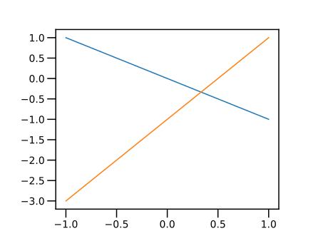
グラフの凡例（はんれい，legend）は，グラフに描かれた曲線を区別するための説明である． PyPlotパッケージで書かれたグラフに凡例を追加するには，以下のようにする．
まず，plot 関数に label=文字列 の形式で， その曲線に付与する文字列を指定する． すべての曲線を描いた後に，legend 関数を実行すると，グラフに凡例が追加される．
using PyPlot
xs = -1:0.1:1
ys1=-1 * xs
ys2=2 * xs .- 1
plt.plot(xs, ys1, label = "y=-x")
plt.plot(xs, ys2, label = "y=2x-1")
plt.legend()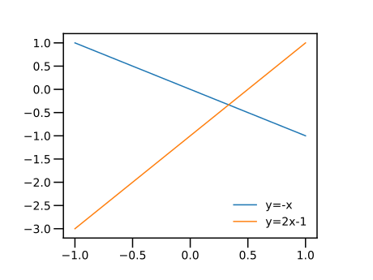
比例関係 $y = ax$（ただし $a = 1, 2, 3, 4, 5$ ）のグラフを描こう．
xs = -1:0.1:1
plt.plot(xs, xs, label = "y= x")
plt.plot(xs, 2 * xs, label = "y=2x")
plt.plot(xs, 3 * xs, label = "y=3x")
plt.plot(xs, 4 * xs, label = "y=4x")
plt.plot(xs, 5 * xs, label = "y=5x")
plt.legend()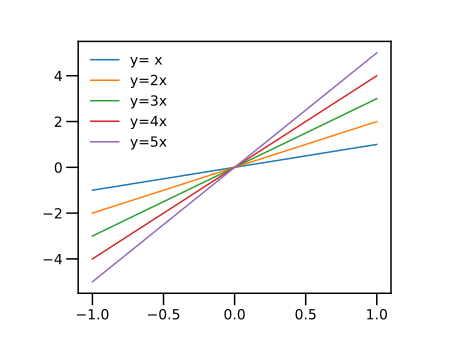
関数を呼び出すときに渡す値を，引数（ひきすう）または実引数（じつひきすう，argument）という．label=文字列 のように名前付きで渡す引数を，キーワード引数（keyword argument）という．
▼ グラフに，水平線・垂直線を加える
式 $y=ax$ は，すべて原点 $(0,0)$ を通る． 水平線や垂直線の補助線を引いて，これを見やすくしよう．
PyPlotパッケージに用意された関数 axhline(y) は， 縦座標 $y$ で水平線（horizontal line）を描く． 最初の引数には，水平線を引く $y$ 座標を指定する． キーワード引数 color="k" は，黒色（black）で描くことを指定し，lw=0.5 は線幅（linewidth）を指定する．
また，関数 axvline(x) は，横座標 $x$ で垂直線（vertical line）を描く． 最初の引数には，垂直線を引く $x$ 座標を指定する．
上のプログラムに続けて
# 水平線 y=0
plt.axhline(0, color = "k", lw = 0.5)
# 垂直線 x=0
plt.axvline(0, color = "k", lw = 0.5)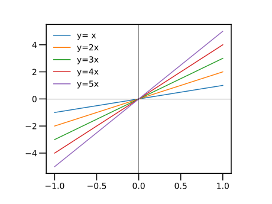
▼ グラフの描画範囲を指定する
plot 命令は，すべての点を表示するように，描画範囲を拡大する．
グラフの描画範囲を調整するには，関数 xlim と ylim を用いる．
- 関数
xlim(a,b)は，x軸の描画をaからbの範囲に限定する． - 関数
ylim(a,b)は，y軸の描画をaからbの範囲に限定する．
上のプログラムに続けて
# 描画範囲
plt.xlim(-3, 3) # <=
plt.ylim(-3, 3) # <=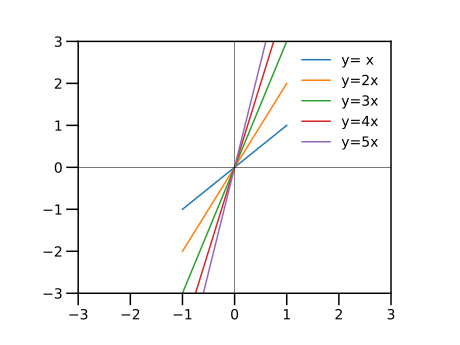
別の描画範囲を指定してみる． 上のプログラムに続けて
# 描画範囲
plt.xlim(-0.5, 0.5) # <=
plt.ylim(-0.5, 0.5) # <=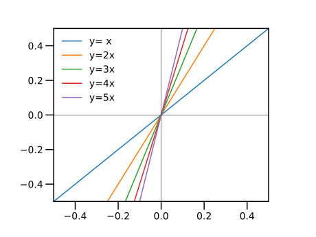
▼ グラフのアスペクト比を等しくする
「グラフの縦横の長さの比」をアスペクト比（aspect ratio）という．
関数 plt.axes().set_aspect() は，アスペクト比を指定する命令である．
何も指定しない場合は，plt.axes().set_aspect("auto") であり， アスペクト比は適当に調整される （既定値 6.4:4.8 を元に調整される）．
関数 plt.axes().set_aspect("equal") は，アスペクト比を等しくする命令である． 通常は，前項の描画範囲の指定と同時に用いる．
アスペクト auto の場合
using PyPlot
# plt.axes().set_aspect("auto") # PyPlot起動時は指定しなくてもよい
xs = -1:0.2:1
plt.plot(xs, xs)
plt.xlim(-1, 1)
plt.ylim(-1, 1)
plt.axhline(0, color = "k", lw = 0.5)
plt.axvline(0, color = "k", lw = 0.5)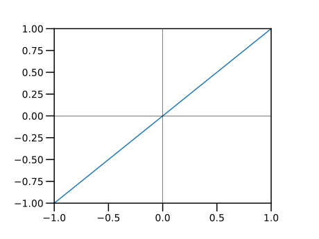
アスペクト equal を指定する．
plt.figure()
plt.axes().set_aspect("equal") # <==
xs = -1:0.2:1
plt.plot(xs, xs)
plt.xlim(-1, 1)
plt.ylim(-1, 1)
plt.axhline(0, color = "k", lw = 0.5)
plt.axvline(0, color = "k", lw = 0.5)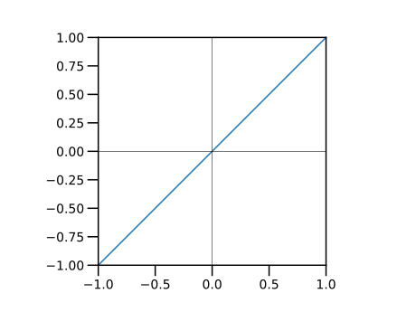
アスペクト比の変更は，何かを描く前に実行するのが望ましい．何かを描いてから．set_aspect 命令を実行すると警告される場合がある．
▲ 練習：三角形の拡大縮小・平行移動を描画する
第1回の■ ベクトルの各要素をスカラーで乗除すると■ ベクトルの各要素をスカラーで加減する では， 三角形を拡大縮小したり，平行移動したりした．それぞれの操作を行った三角形を同じ描画範囲で描け． 確かに拡大縮小または平行移動となっていることを観察せよ． 解答例 → ■ ベクトルに対する更新演算：乗除，■ ベクトルに対する更新演算：加減
■ for 文
Repeated Evaluation: Loops (section)
一つずつ要素を取り出すことができる量をコレクション（collection）という． ベクトルや範囲は，コレクションである．
for 文を用いると，コレクションから要素を一つづつ取り出して， end 文が出現するまでの文を繰り返して，計算を行うことができる． この繰り返される部分をブロック（block）という． ブロックは，字下げ（indent）で表記される． が，字下げは見やすさのためだけである．
繰り返しをループ（loop）ともいう．
ブロックは，for 文以外にも出現する（たとえば，■ if文）． 区別する場合は for ブロックとも称する．
次の例では，変数 i にベクトルの各要素を入れて，end 文までの計算を繰り返す． コレクションの各要素が入る変数をループ変数（loop variable）という．
julia> for i in [1, 3, 2] @show i # 式 i の値を表示する endi = 1 i = 3 i = 2
@show i は，式 i の値を表示するマクロである．
範囲を用いた for 文の例を示す．
println(x) 関数は，x を印字してから，改行する命令である．
julia> for i = 1:5 println(string(i)) end1 2 3 4 5
▼ for 文でパラメータを変えて，複数のグラフを描く
▼ グラフに凡例を加える の後半のプログラムを再掲する．
using PyPlot
xs = -1:0.1:1
plt.plot(xs, xs, label = "y= x")
plt.plot(xs, 2 * xs, label = "y=2x")
plt.plot(xs, 3 * xs, label = "y=3x")
plt.plot(xs, 4 * xs, label = "y=4x")
plt.plot(xs, 5 * xs, label = "y=5x")
plt.legend()上のプログラムを，for 文を用いた繰り返しを用いて書き直してみよう．
次の例の for 文では， ループ変数 a に，1, 2, 3, 4, 5 の値を順番に入れて，end までの文を実行する．
繰り返しの中で xs は書き換えられないから，xs への代入は繰り返しの前に一度だけ行えばよい．
using PyPlot
xs = -1:0.1:1
for a = 1:5
plt.plot(xs, a * xs)
end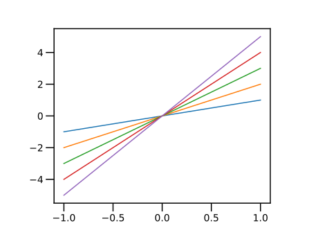
上のプログラムに凡例を加える前に，for文を使って，label=文字列 に与える文字列を作ってみよう．
for a = 1:5
label1 = "y=" * string(a) * "x"
println(label1)
endy=1x
y=2x
y=3x
y=4x
y=5xでは凡例を加えよう．plt.legend() は，繰り返しを抜けてから，一度だけ呼び出す．
using PyPlot
xs = -1:0.1:1
for a = 1:5
label1 = "y=" * string(a) * "x"
plt.plot(xs, a * xs, label=label1)
end
plt.legend()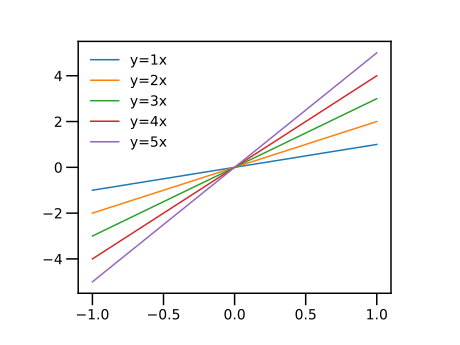
▲ 練習
上のプログラムで，グラフのアスペクト比を等しくし，さらに補助線 $x = 0$ と $y = 0$ を追加せよ．
▼ 冪乗関数を描く
x^y は，冪（べき，power）ないし冪乗（べきじょう）$x^{y}$ を表す． $x$ を底（base），$y$ を冪指数（exponent）という．
julia> 2^24julia> 2^38julia> 2^416
スカラー c とベクトル v に演算子 .^ を適用した式 c .^ v は， 各々の冪指数に対して冪乗した値を要素とするベクトルを与える．
底が整数の場合は .^ の前に空白を入れる．
julia> 2 .^[2,3,4]3-element Vector{Int64}: 4 8 16
整数（底）の直後に .^ と書くと例外が出るので注意しよう．
julia> 2.^[2,3,4]
ERROR: syntax: invalid syntax "2.^"; add space(s) to clarify底が小数の場合は，その直後に .^ と書いてよい．
julia> 2.0.^[2, 3, 4]3-element Vector{Float64}: 4.0 8.0 16.0
ベクトルとスカラーに演算子 .^ を適用した式 v .^ c は， 各々の底に対して冪乗した値を要素とするベクトルを与える．
julia> [2, 3, 4] .^ 23-element Vector{Int64}: 4 9 16julia> [2, 3, 4] .^ 23-element Vector{Int64}: 4 9 16
範囲 v とスカラー c に演算子 .^ を適用した式 v .^ c は， 各々の底に対して冪乗した値を要素とするベクトルを与える．
julia> (2:4) .^ 23-element Vector{Int64}: 4 9 16julia> 2:4 .^ 2 # `^`は `:` よりも優先度が高い2:16
区間 $x= [0,1]$ で，冪乗 $y=x^a$（ただし $a = 2,3,4,5$ ）のグラフを描こう．
plt.axes().set_aspect("equal") は， グラフの縦横比（アスペクト比 aspect ratio）を等しくする命令である．
using PyPlot
plt.axes().set_aspect("equal")
xs = 0:0.1:1
plt.plot(xs, xs .^ 2)
plt.plot(xs, xs .^ 3)
plt.plot(xs, xs .^ 4)
plt.plot(xs, xs .^ 5)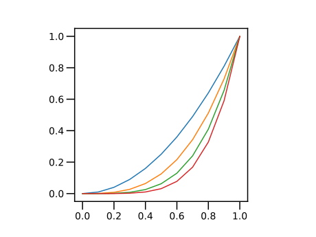
for 文を使って，繰り返しの処理をまとめる．
plt.axes().set_aspect("equal") は，グラフを書く前に一度だけ実行する．
区間を $x= [0,2]$ に拡大して，凡例を追加しよう．
using PyPlot
plt.axes().set_aspect("equal")
xs = 0:0.05:2
for a = 2:5
plt.plot(xs, xs .^ a, label = "y=x^" * string(a))
end
plt.legend()
# 描画範囲を設定
plt.xlim(-0.05, 2)
plt.ylim(-0.05, 2)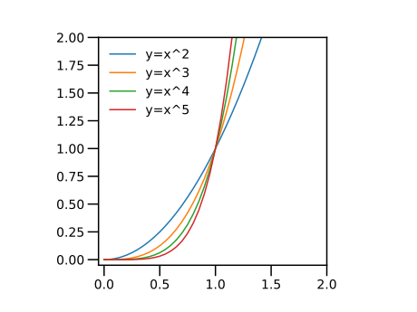
冪乗 $y=x^a$ （ただし $a = 2, 3, 4, 5 $）は，すべて点 $(1,1)$ を通る． 直線 $x = 1$ と $y = 1$ を付与して，これを見やすくしよう．
using PyPlot
plt.axes().set_aspect("equal")
# 間隔を狭めた
xs = 0:0.05:2
for a = 2:5
plt.plot(xs, xs .^ a, label = "y=x^" * string(a))
end
plt.legend()
# 描画範囲を設定
plt.xlim(-0.05, 2)
plt.ylim(-0.05, 2)
# 水平線 y=1
plt.axhline(1, color = "k", lw = 0.5)
# 垂直線 x=1
plt.axvline(1, color = "k", lw = 0.5)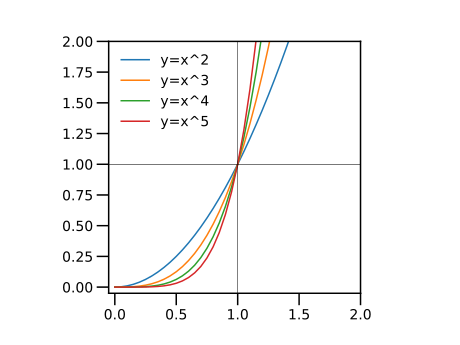
▼ ローレンツ関数を描く
以下の曲線を， ローレンツ関数（Lorentzian function）という．
\[\begin{gathered} y = \dfrac{\dfrac{\gamma}{2}}{(x-x_0)^2+\left(\dfrac{\gamma}{2}\right)^2}, \\ \gamma > 0 \end{gathered}\]
パラメータを $x_0 = 0, \gamma = 2$ のように選ぶと， 以下のように簡単な形となる．
\[y = \dfrac{1}{x^2+1}\]
まず，この曲線を描いてみる．
分母 $x^2+1$ を計算するには，「ベクトル」 xs.^2 にスカラー 1 を加算する． このとき，+ の前にピリオド . を付与した ドット演算子（dot operator）.+ を用いる．
julia> xs = -3:0.5:3-3.0:0.5:3.0julia> xs.^ 2 .+ 113-element Vector{Float64}: 10.0 7.25 5.0 3.25 2.0 1.25 1.0 1.25 2.0 3.25 5.0 7.25 10.0
「スカラー」$1$ を「ベクトル」 $(xs.^2+1)$ の各要素で割る には，/ の前にピリオド . を付与したドット演算子 ./ を用いる．
julia> 1 ./ (xs.^ 2 .+ 1)13-element Vector{Float64}: 0.1 0.13793103448275862 0.2 0.3076923076923077 0.5 0.8 1.0 0.8 0.5 0.3076923076923077 0.2 0.13793103448275862 0.1
上のグラフを描こう．xs の刻みを小さくしておく．
using PyPlot
xs = -3:0.1:3
ys = 1 ./ (xs.^ 2 .+ 1)
plt.plot(xs, ys)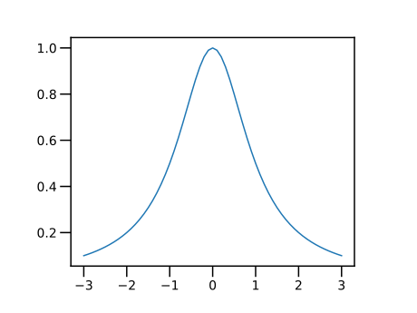
以下のように，パラメータ $\gamma$ を追加する．
\[y = \dfrac{\dfrac{\gamma}{2}}{x^2+\left(\dfrac{\gamma}{2}\right)^2}\]
3つのパラメータ $\gamma=0.5, 1, 2$ について，この曲線を描く．
using PyPlot
xs = -3:0.05:3
gamma = 0.5
ys = (gamma / 2) ./ (xs.^ 2 .+ (gamma / 2)^2)
plt.plot(xs, ys, label = gamma)
gamma = 1.0
ys = (gamma / 2) ./ (xs.^ 2 .+ (gamma / 2)^2)
plt.plot(xs, ys, label = gamma)
gamma = 2.0
ys = (gamma / 2) ./ (xs.^ 2 .+ (gamma / 2)^2)
plt.plot(xs, ys, label = gamma)
plt.legend()
gamma の値が変わっても，それぞれの曲線を描くための命令は変わらない． for 文を用いて，gamma の値を変えてみよう（結果のグラフは前出のため省略）．
using PyPlot
xs = -3:0.05:3
for gamma in [0.5, 1.0, 2.0]
local ys=(gamma / 2) ./ (xs.^ 2 .+ (gamma / 2)^2)
plt.plot(xs, ys,
label = gamma)
end
plt.legend()本章のプログラムを順に打ち込みながら対話すると，変数 ys が定義済みである．上のコードの forブロックの最初の文 local ys は，forブロックの外で定義された（＝全域）変数 ys の値を変更するのではなく，forブロック内部のみで定義される（＝局所）変数 ys を用いることをJuliaに指示する．Julia 1.6では，localを付けなくても上のプログラムは動作するが警告メッセージが表示される．
ローレンツ関数には，次の性質がある．
- 点 $x = 0$ で 最大値 $y = \dfrac{2}{\gamma}$
- 点 $x = \pm\dfrac{\gamma}{2}$ で，最大値の半分 $y = \dfrac{1}{2}\dfrac{2}{\gamma}$
2つ目の性質を観察するため，最大値に対する比を描いてみる．
using PyPlot
xs = -3:0.05:3
for gamma in [0.5, 1.0, 2.0]
local ys=(gamma / 2) ./ (xs.^ 2 .+ (gamma / 2)^2) / (2 / gamma)
plt.plot(xs,ys,
label = gamma,
)
end
plt.legend()
plt.axhline(1 / 2, color = "k", lw = 0.5)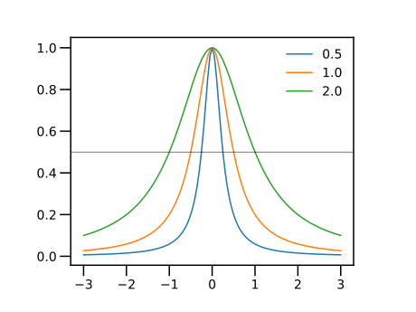
plot 関数の文は，複数の行にまたがっていることに注目したい．式や文が次の行に続くことを示す記法は，とくに用意されていない．構文が行末で終わらなければ，次の行まで読みにいく．
パラメータ $\gamma$ は，半値全幅（Full Width of Half Maximum, FWHM）と呼ばれる． $\gamma$ を非常に小さくすると，Diracのデルタ関数（Dirac delta function）の近似（の1つ）となる．
■ ドット演算子
前節 ▼ ローレンツ関数を描くでは， コレクションとスカラーとの間の加減除算で，.+ ，.- ，./ のように， 半角文字のピリオド（ドッド）で始まるドット演算子（dot operator）を用いた． ドット演算子は，「コレクションの各要素に対して演算する（element-wise operation）」という意味を持つ．
加減乗除のドット演算子を適用される値の 一方がコレクション，他方がスカラーの場合には， 「スカラーをコレクションと同じ寸法を持つベクトルに拡張して」から， 要素どうしの演算を行う仕組みになっている． この仕組みを「ブロードキャスト（broadcast）」と呼ぶ．
▼ コレクションとスカラーとの四則演算（復習）
コレクションをスカラーで乗除するには，演算子 *，/ を用いる．ドット演算子を使う必要はない．
・ベクトルをスカラーで乗除する → ■ ベクトルの各要素をスカラーで乗除する
・範囲をスカラーで乗除する → ■ 範囲の各要素をスカラーで乗除する
julia> (2:2:4) * 24:4:8julia> (2:2:4) / 21.0:1.0:2.0
結果も範囲となる（賢い！）．
注意：括弧をつけないと，解釈が異なる．範囲の演算子 : は，四則演算の演算子よりも優先度が低い．2:2:(4 * 2) と解釈される．
julia> 2:2:4 * 2
2:2:8コレクションをスカラーで加減するには，演算子 .+，.- を用いる．
・ベクトルをスカラーで加減する → ■ ベクトルの各要素をスカラーで加減する
・範囲をスカラーで加減する → ■ 範囲の各要素をスカラーで加減する
julia> 2:2:4 .+ 22:2:6julia> 2:2:4 .- 22:2:2
注意：ドットをつけないと，解釈が異なる．範囲の演算子 : は，四則演算の演算子よりも優先度が低い．2:2:(4 + 2) と解釈される．
julia> 2:2:4 + 2
2:2:6ドットの付け忘れが怖いなら，範囲を括弧で囲むとよい．
julia> (2:2:4) .+ 2
4:2:6▼ コレクションの対応する要素どうしの加減乗除
同じ寸法を持つコレクションどうしに対してドット演算子を用いると， 対応する要素どうしで演算を行う． 要素の数が異なると，例外（exception, エラー）が発生する．
・ベクトル（の対応する要素）どうしの加減算
julia> xs = [1, 2, 2, 1]4-element Vector{Int64}: 1 2 2 1julia> ys = [1, 1, 3, 1]4-element Vector{Int64}: 1 1 3 1julia> xs .+ ys4-element Vector{Int64}: 2 3 5 2julia> xs .- ys4-element Vector{Int64}: 0 1 -1 0
・範囲（の対応する要素）どうしの加減算
julia> xs = 100:100:300100:100:300julia> ys = 1:2:51:2:5julia> xs .+ ys101:102:305julia> xs .- ys99:98:295
結果も範囲となる（賢い！）．
・範囲とベクトル（の対応する要素どうし）の加減算
julia> xs = 100:100:300100:100:300julia> ys = [1,3,5]3-element Vector{Int64}: 1 3 5julia> xs .+ ys3-element Vector{Int64}: 101 203 305julia> xs .- ys3-element Vector{Int64}: 99 197 295
1つ上の「範囲どうしの加算」の例と比較せよ．範囲 1:2:5 とベクトル [1,3,5] は，実質同じ値であるが，範囲とベクトルの加減算はベクトルになる．
・ベクトル（の対応する要素）どうしの乗除算
julia> xs = [1, 2, 4, 3]4-element Vector{Int64}: 1 2 4 3julia> ys = [2, 1, 2, 1]4-element Vector{Int64}: 2 1 2 1julia> xs .* ys4-element Vector{Int64}: 2 2 8 3julia> xs ./ ys4-element Vector{Float64}: 0.5 2.0 2.0 3.0
■ 更新演算子
変数に四則演算などを行って，元の変数に再代入する場合には， 更新演算子（updating operator）を用いるとよい． たとえば，加算の更新演算子は+記号の直後に = の文字を付与する．
julia> x = 11julia> # 再代入 x = x + 12julia> # 更新演算子 x += 13
スカラー変数に対する演算子 +，-，*，/，^ に対して， 更新演算子 +=，-=，*=，/=，^= が用意されている．
以下の例は，変数 gamma を 2 で繰り返し割り算する．
julia> gamma = 22julia> for i = 1:5 global gamma gamma /= 2 @show gamma endgamma = 1.0 gamma = 0.5 gamma = 0.25 gamma = 0.125 gamma = 0.0625
更新演算子 /= を利用して，ローレンツ関数のパラメータ gamma を変えてみる．
for 文の次の global gamma に注目してほしい． 対話型で実行する場合，for 文の外側で定義された変数の値を変更することは， 安全のために通常禁止されている．これを可能とするのが global 文である．
using PyPlot
xs = -3:0.05:3
gamma = 2
for i = 1:5
global gamma
local ys=(gamma / 2) ./ (xs.^ 2 .+ (gamma / 2)^2) / (2 / gamma)
plt.plot(
xs,ys,
label = gamma,
)
gamma /= 2
end
plt.legend()
axhline(1 / 2, color = "k", lw = 0.5)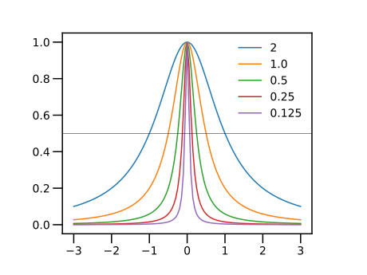
▲ 練習
ローレンツ関数において，パラメータ $x_0$ を変えたグラフを作成せよ． for 文を使う方法，更新演算子を使う方法の，2つで描いてみよ．
■ ベクトルに対する更新演算：乗除
ベクトルを保持する変数に対しても，更新演算が用意されている．
・ベクトルを保持する変数を，スカラー倍して更新する
ベクトルをスカラー倍して更新するには，更新演算子 *= を用いる． 式 v *= c は，v = v * c と同じ動作をする．
julia> xs = [1, 2, 2, 1]4-element Vector{Int64}: 1 2 2 1julia> xs *= 24-element Vector{Int64}: 2 4 4 2julia> xs4-element Vector{Int64}: 2 4 4 2
前節の三角形を描く例題で，更新演算子 *= を用いて，図形を繰り返し拡大してみよう．
using PyPlot
plt.axes().set_aspect("equal")
xs = [1.0, 2.0, 2.0, 1.0]
ys = [1.0, 1.0, 3.0, 1.0]
for i = 1:5
global xs, ys
plt.plot(xs, ys)
xs *= 1.2
ys *= 1.2
end
plt.xlim(0, 7)
plt.ylim(0, 7)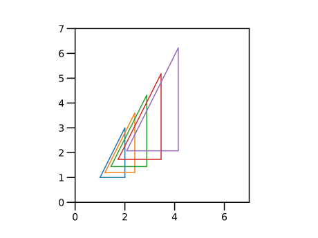
ベクトルをスカラーで除して更新するには， 更新演算子 /= を用いる． 式 v /= c は，v = v / c と同じ動作をする．
■ ベクトルに対する更新演算：加減
ベクトルにスカラーを加減して更新するには，更新演算子 .+=または .-= を用いる． 式 v .+= c は，v = v .+ c と同じ動作をする．
julia> xs = [1, 2, 2, 1]4-element Vector{Int64}: 1 2 2 1julia> xs .+= 14-element Vector{Int64}: 2 3 3 2julia> xs4-element Vector{Int64}: 2 3 3 2
前節の三角形を描く例題で，更新演算子 .+= を用いて， 図形を繰り返し並行移動してみよう．
for 文の中で，変数 xs と ys を更新するので，global xs, ys の文が必要である．
using PyPlot
plt.axes().set_aspect("equal")
xs = [1.0, 2.0, 2.0, 1.0]
ys = [1.0, 1.0, 3.0, 1.0]
for i = 1:5
global xs, ys
plt.plot(xs, ys)
xs .+= 0.5
ys .+= 0.5
end
plt.xlim(0, 6)
plt.ylim(0, 6)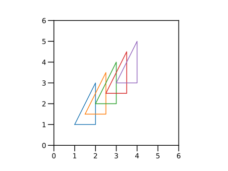
■ ベクトルとコレクションとの更新演算
ベクトルとコレクションに対する演算にも更新演算子が用意されている． ベクトル v とコレクション w に対して， 式 v .+= w は，v = v .+ w と同じ動作をする．
julia> xs = [1, 2, 2, 1]4-element Vector{Int64}: 1 2 2 1julia> ys = [1, 1, 3, 1]4-element Vector{Int64}: 1 1 3 1julia> xs .+= ys4-element Vector{Int64}: 2 3 5 2julia> xs4-element Vector{Int64}: 2 3 5 2julia> xs .-= ys4-element Vector{Int64}: 1 2 2 1julia> xs4-element Vector{Int64}: 1 2 2 1
同様に，式 v .*= w は，v = v .* w と同じ動作をする．
julia> xs = [1, 2, 2, 1]4-element Vector{Int64}: 1 2 2 1julia> ys = [1, 1, 3, 1]4-element Vector{Int64}: 1 1 3 1julia> xs .*= ys4-element Vector{Int64}: 1 2 6 1julia> xs4-element Vector{Int64}: 1 2 6 1julia> xs ./= ys4-element Vector{Int64}: 1 2 2 1julia> xs4-element Vector{Int64}: 1 2 2 1
▲ 練習
ベクトルの要素どうしの乗算 .* と for文を用いて，いくつかの冪乗関数のグラフを描いてみよ．
さらに，ベクトルの要素どうしの乗算の代わりに，ベクトル要素の乗算と更新演算子 *= も使ってみよ．
★ 今回のまとめ
- 文字列
for文- グラフに凡例を加える
- 冪乗関数
- ローレンツ関数
- 更新演算子
- ドット演算子
- コレクション＝ベクトル・範囲
- コレクションの対応する要素どうしの加減乗除